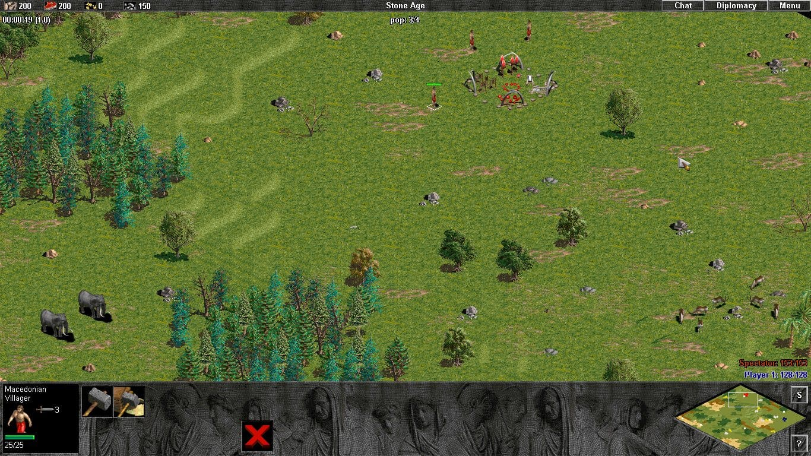
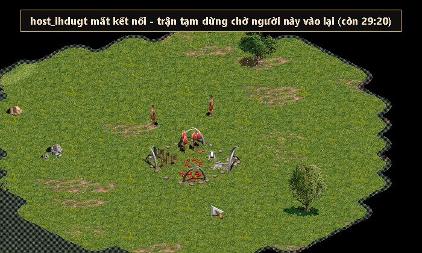
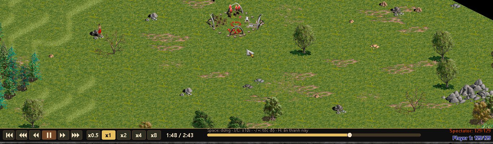
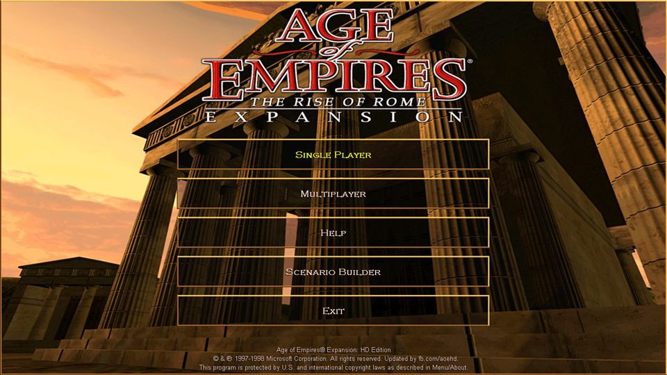
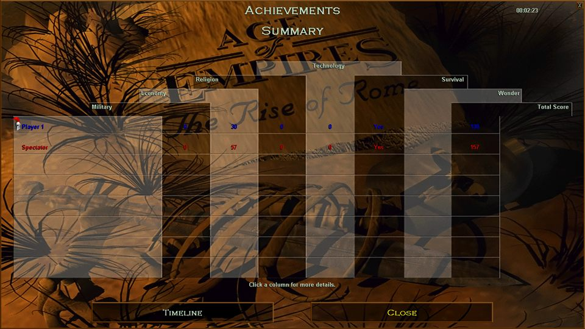

Chơi Đế Chế online.
Xem trực tiếp, xem lại replay.
SuperAoE đưa Age of Empires: Rise of Rome lên mạng bằng đồ họa gốc của game, không cần VPN hay mở cổng router.
- Chơi online miễn phíTạo phòng tới 8 người. Một người mất mạng, cả đội chờ tới 30 phút để người đó vào lại
- Mời khách xem trậnKhách mời xem 8 người đang thi đấu ở chế độ khán giả
- Xem lại toàn bộ trận cũRút kinh nghiệm và học hỏi cách đánh của đối thủ
- Có ứng dụng cho MacBookChạy trên MacBook chip Apple M1, M2, M3, M4

Một người rớt mạng, cả đội chờ tới 30 phút
Trước đây chơi Đế Chế qua mạng, chỉ cần một người rớt là cả trận coi như bỏ. SuperAoE giữ trận lại cho tới khi người đó quay về.
- 1
Trận tự tạm dừng
Mọi người trong trận thấy thông báo ai mất kết nối và còn bao lâu để người đó vào lại.
- 2
Mạng có lại là đánh tiếp
Mạng chập chờn rồi có lại, game tự kết nối, trận chạy tiếp như chưa có gì.
- 3
Lỡ tắt game? Bấm "Vào lại trận"
Mở launcher, bấm "↻ Vào lại trận": game tua nhanh tới đúng lúc bạn rời rồi cho bạn chơi tiếp quân của mình.
- 4
Tối đa 30 phút mỗi người
Mỗi người được chờ tổng cộng 30 phút mỗi trận. Hết giờ mà chưa về thì người đó bị loại, những người còn lại đánh tiếp.

Lưu và xem lại trận đấu cũ. Rút kinh nghiệm, học hỏi đối thủ.
Đánh xong là có replay: SuperAoE tự lưu mọi trận online trên máy chủ, bạn không phải bấm ghi hay nhớ lưu file. Replay chạy bằng chính game gốc (mô phỏng lại đúng từng lệnh, không phải video), nên bạn thấy toàn bản đồ như một khán giả.
- 1
Mở "Lịch sử trận / Xem lại"
Trong menu launcher có danh sách các trận bạn đã đánh.
- 2
Bấm vào trận để xem
Game tự mở ở chế độ xem lại. Có file
.aoerepbạn bè gửi? Chọn "Mở file replay". - 3
Tua, dừng, tăng tốc
Thanh điều khiển: về đầu, lùi 30/10 giây, dừng/chạy, tới 10/30 giây, tốc độ x0.5 đến x8, bấm thanh tiến trình để nhảy tới thời điểm bất kỳ.
- 4
Rút kinh nghiệm, học hỏi đối thủ
Xem lại mình thua ở đâu, đối thủ mở đầu thế nào, đi quân hướng nào, đánh lúc nào. Miễn phí.

Mọi thứ để chơi và xem Đế Chế cùng nhau
Dùng chính game gốc, không vẽ lại, không giả lập đồ họa. SuperAoE chỉ lo phần mạng, phòng chờ và khán giả.
Chơi online tới 8 người
Tạo phòng, gửi mã 6 ký tự cho bạn bè. Không cần VPN, Hamachi hay mở cổng router: launcher tự nối máy các người chơi (P2P), dự phòng qua máy chủ Cloudflare.
3 ghế khán giả trực tiếp
Vua ngồi giữa, hai Thái giám hai bên. Xem cả bản đồ không sương mù, bấm phím 1–8 để theo dõi từng người chơi.
Mất mạng, cả đội chờ 30 phút
Một người rớt mạng giữa trận, trận tạm dừng và cả phòng chờ người đó vào lại, tối đa 30 phút. Lỡ tắt game thì bấm "Vào lại trận" để đánh tiếp. Không lo rớt mạng là mất cả trận như trước. Xem ảnh thật
Chạy mượt trên MacBook M
Bản cài riêng cho Mac chip Apple (M1, M2, M3, M4…), chạy mượt, đóng gói sẵn Wine và game, không cần cài Windows. Tự cập nhật, chơi chung phòng với Windows.
Sảnh chờ chữ U
8 ghế quần thần xếp theo phẩm hàm, quan Nhất phẩm là màu 1. Chủ phòng kéo thả để sắp xếp đội hình trước khi bắt đầu.
Xem lại trận cũ, học hỏi đối thủ
Mọi trận online được lưu sẵn trên máy chủ. Mở "Lịch sử trận", bấm là xem lại để rút kinh nghiệm và xem đối thủ đánh thế nào: tua 10/30 giây, tốc độ x0.5–x8. Xem chi tiết
Đúng Đế Chế bạn đã chơi
Các ảnh dưới đây được chụp trực tiếp từ game ở chế độ khán giả của SuperAoE, không qua chỉnh sửa.


Xem trực tiếp như ngồi cạnh người chơi
Đế Chế bản gốc không có chế độ khán giả. SuperAoE cho game chạy theo đúng dòng lệnh của người chơi, nên khán giả thấy trận y hệt bằng chính đồ họa gốc.
- 1
Ngồi ghế khán giả
Ghế Vua ở giữa hoặc hai ghế Thái giám hai bên, đầu phòng chữ U.
- 2
Chủ phòng bấm Bắt đầu
Game của khán giả tự mở ở chế độ chỉ xem, không ra lệnh được cho quân.
- 3
Xem toàn bản đồ
Bấm phím 1–8 để theo góc nhìn từng người chơi, thấy cả hướng họ trỏ quân.
- 4
Vào lại bất cứ lúc nào
Khán giả xem gần như cùng lúc với người chơi. Lỡ thoát ra vẫn vào lại trận đang diễn ra được.
Triều đình chữ U, chuẩn không khí Đế Chế
Hai cánh là 8 ghế quần thần từ Nhất đến Bát phẩm, phẩm hàm chính là màu trong trận. Ba ghế đầu phòng dành cho khán giả.
- Danh sách phòng trực tiếp: thấy các phòng đang mở, tìm theo mã, đặt mật khẩu nếu muốn chơi riêng.
- Một nút bắt đầu: chủ phòng bấm, mọi người tự vào game đúng vai, không phải gõ IP.
- Đánh nhiều trận liền: hết trận vẫn ở lại sảnh, chủ phòng mở trận tiếp theo.
- Rớt mạng không mất trận: trận tạm dừng, cả phòng chờ người rớt tối đa 30 phút; lỡ tắt game thì bấm "Vào lại trận". Khán giả vào lại trận đang đánh được.
- Tài khoản & bảo mật: mật khẩu được băm an toàn; gói tin trong phòng được lọc chặt theo loại, kích thước và người gửi.
Chọn bản cho máy của bạn
Bản Windows và bản Mac đều đã kèm game, chơi chung phòng với nhau và tự lưu replay mọi trận online. Xem cách cài và sửa lỗi khi tải Đế Chế và hướng dẫn chơi AoE online miễn phí từng bước.
Windows
Windows 10 / 11 · khoảng 135 MB
- Mở SuperAoE-Setup.exe, cài tự động, không cần quyền quản trị
- Mở SuperAoE từ biểu tượng trên Desktop, đăng ký tài khoản và vào phòng
- Gặp lỗi hoặc Windows cảnh báo? Xem cách xử lý
MacBook MỚI
macOS · chip Apple M1, M2, M3, M4… · khoảng 300 MB
- Đóng gói sẵn Wine và game, không cần cài Windows
- Cài nhanh nhất: mở Terminal (Cmd + Space, gõ Terminal), dán lệnh này rồi bấm Enter. Lệnh tự tải, cài SuperAoE.app vào Applications và mở app, macOS không chặn:
curl -fsSL https://superaoe.com/mac.sh | bash - Hoặc tải file zip bên dưới, giải nén rồi làm đúng như tên file Mo Terminal - go bash - keo file nay vao - Enter.command
- App tự cập nhật; chơi chung phòng với bản Windows. Mac chip Intel không hỗ trợ
Tìm người chơi cùng, hỏi cách cài hoặc báo lỗi: tham gia nhóm Facebook SuperAoE và theo dõi trang Facebook SuperAoE để nhận tin bản cập nhật mới.
Đế Chế chạy mượt trên MacBook M1, M2, M3, M4
Game gốc là phần mềm Windows. Bản SuperAoE cho Mac đóng gói sẵn Wine và game Rise of Rome thành ứng dụng SuperAoE.app, chạy mượt trên MacBook chip Apple mà không cần cài Windows hay máy ảo.
- Chơi chung phòng với Windows: cùng máy chủ, cùng tài khoản, cùng phòng.
- Tự cập nhật trong app: có bản mới là app tự tải và cài, không phải tải lại gói.
- Không đụng vào hệ thống: Wine và game nằm gọn trong app.
Cài trên Mac trong 3 bước
- 1
Mở Terminal
Bấm Cmd + Space, gõ Terminal, bấm Enter.
- 2
Dán lệnh cài, bấm Enter
curl -fsSL https://superaoe.com/mac.sh | bashLệnh tải gói khoảng 300 MB, cài SuperAoE.app vào Applications rồi tự mở app. Có thể hỏi mật khẩu Mac nếu máy chưa có Rosetta 2.
- 3
Lần sau mở từ Launchpad
App tự cập nhật khi có bản mới, không phải chạy lại lệnh.
Đã tải file zip? Giải nén, mở Terminal, gõ bash và một dấu cách, kéo file Mo Terminal - go bash - keo file nay vao - Enter.command vào cửa sổ Terminal rồi bấm Enter.
Câu hỏi thường gặp
SuperAoE có mất phí không?
Không. Tải về, đăng ký tài khoản và chơi miễn phí.
Khán giả có thấy được sương mù của người chơi không?
Khán giả thấy toàn bản đồ và có thể chuyển sang góc nhìn của từng người chơi bằng phím 1–8. Khán giả xem gần như cùng lúc với người chơi, nên chủ phòng nên mời khán giả mình tin tưởng.
Có cần VPN, Hamachi hay mở cổng không?
Không. Launcher tự nối các máy trong trận với nhau (P2P qua WebRTC), không nối thẳng được thì chạy qua máy chủ SuperAoE trên Cloudflare; chỉ cần có Internet là vào phòng được.
Có cần cài Age of Empires trước không?
Không. Bộ cài SuperAoE-Setup.exe đã có sẵn Age of Empires 1 Rise of Rome, cài là chạy.
SuperAoE có bản cho MacBook chưa?
Có. SuperAoE có bản cài riêng, chạy mượt trên MacBook chip Apple (M1, M2, M3, M4…), tải tại superaoe.com/download/mac. Gói đã kèm Wine và game, cài thành ứng dụng SuperAoE trong thư mục Applications và tự cập nhật trong app. Bản Mac chơi chung phòng với bản Windows. Mac chip Intel không được hỗ trợ.
SuperAoE có lưu replay để xem lại trận không?
Có. Mọi trận online trên SuperAoE được tự động lưu replay (.aoerep) trên máy chủ, để bạn xem lại trận đấu cũ, rút kinh nghiệm và học hỏi từ đối thủ. Trong launcher, vào menu Lịch sử trận / Xem lại, bấm vào trận để xem lại bằng chính game gốc, tua lùi/tới 10 hoặc 30 giây, chỉnh tốc độ x0.5 đến x8. Miễn phí. Xem hướng dẫn replay.
Một phòng chơi được bao nhiêu người?
Tối đa 8 người chơi và 3 khán giả. Mỗi phòng nhận tối đa 15 thành viên.
Mất mạng giữa trận thì sao?
Trận tạm dừng và cả phòng chờ bạn kết nối lại, tổng cộng tối đa 30 phút mỗi trận. Mạng có lại thì game tự nối; lỡ tắt game thì mở launcher bấm "Vào lại trận" (tối đa 5 lần mỗi trận). Quá 30 phút thì bạn bị loại, những người khác chơi tiếp. Khán giả vào lại trận lúc nào cũng được.
Tìm người chơi cùng hoặc báo lỗi ở đâu?
Vào nhóm Facebook SuperAoE để hẹn trận, hỏi cách cài và báo lỗi. Tin bản cập nhật mới được đăng trên trang Facebook SuperAoE.